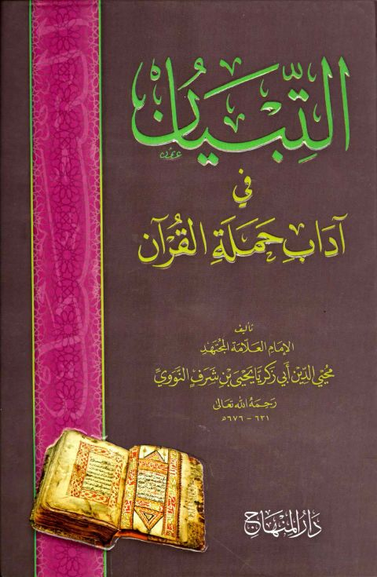

Downloads need an internet connection.
التبيان في آداب حملة القرآن- ت عربش
Authors: يحيى بن شرف النووي
Editors: محمد شادي مصطفى عربش
Publishers: دار المنهاج
**▫️ العنوان: التبيان في آداب حملة القرآن- ت عربش** ▪️ المؤلف: #يحيى_بن_شرف_النووي ▫️ المحقق: #محمد_شادي_مصطفى_عربش ▪️ الناشر: #دار_المنهاج ▫️ تاريخ النشر: 2011م 1432هـ ▪️ بلد النشر: جدة، #السعودية ▫️ الطبعة: 3 ▪️ عدد الأجزاء: 1 ▫️ الصفحات: 270 ▪️ نوع الوعاء: #كتاب ▫️ التصنيف الرئيسي: #التفسير_وعلوم_القرآن ▪️ التصنيف الفرعي: #علوم_القرآن ۪